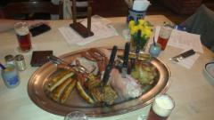
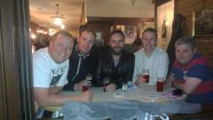
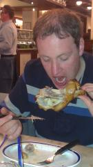

2013-06-13
Today was a tough day
Today was a tough day.
We awoke in familiar JT surroundings... Hungover, in a bunk bed, amidst noisy spaniards in ridiculous heat. This is not why today was a tough day.
We got our gear together, grabbed brekkie in the hostel, said farewell to the Irish bar/hostel and made our way out into a gloomy weathered Dam. This is not why today was a tough day.
Jumped onto an Ice train which was Germany bound (at this point I still don't know where our next destination is) and got comfortable. Jimbo announces we will be on the train for 2 hours where we will arrive at our next stop. This is not why today was a tough day.
Just short of 2 hours into our journey Jimbo announces "We're here.... Dusseldorf". Elated at the opportunity to see yet another part of Germany we disembark the train and make our way through the station. Shauny G only just having been made aware of our latest stop notices that strangely the train station is labelled Duisburg... Thinking this is weird but given that he is simply a passenger on this crazy fun filled journey being led by our knowledgable leader decides it probably just a quirky German thing. This is the start of why today was a tough day.
As we headed out of the station we were slightly bemused and confused at how quiet and dull Dusseldorf seemed to be and the further we wandered the more we thought that we must be in the wrong end of town. Being the hardened travellers we are we persevered. 90 minutes into stroll Jimbo addresses the obvious elephant in the room and states the quote of the tour thus far " We are in fucking Dusseldorf aren't we?!" A quick check reveals that no we are not. We are in fact in Duisburg (the clue was in the train station name!) this also proved another fact - Germans aren't quirky. At this point the heavens opened and we made out way back to the dreaded train station. This is why today was a tough day.
Eventually we made it to Dusseldorf after a not so comfortable journey on a now packed train and a very wet walk to the hostel with many learns taken from today's experience. If the infamous platform 3 incident in Ancona a few years back - if it feels wrong then check ringing true once again!
All this aside... This is what Jimbo Tours is all about. You take the occasion downs with the plentiful ups and press on to pastures new. As Jimbo himself would say... If you want everything to be planned and all the boxes ticked then go to Thomas Cook and book a package holiday!
2 days... 2 countries... 2 cities... 1 God awful town (where I believe German people go to die) and messy night ahead. We've only just got started!
I for one will not be heading to Thomas Cook anytime soon!!!!
Bring on Ze Germans!!!
Shauny G.
Photographs


{kind=link}

{kind=link}


{kind=link}
